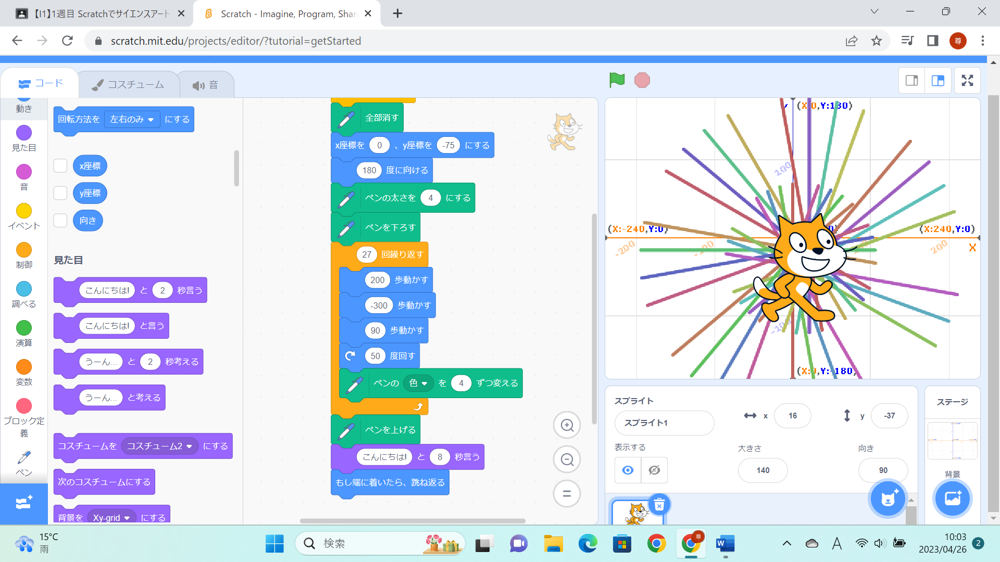
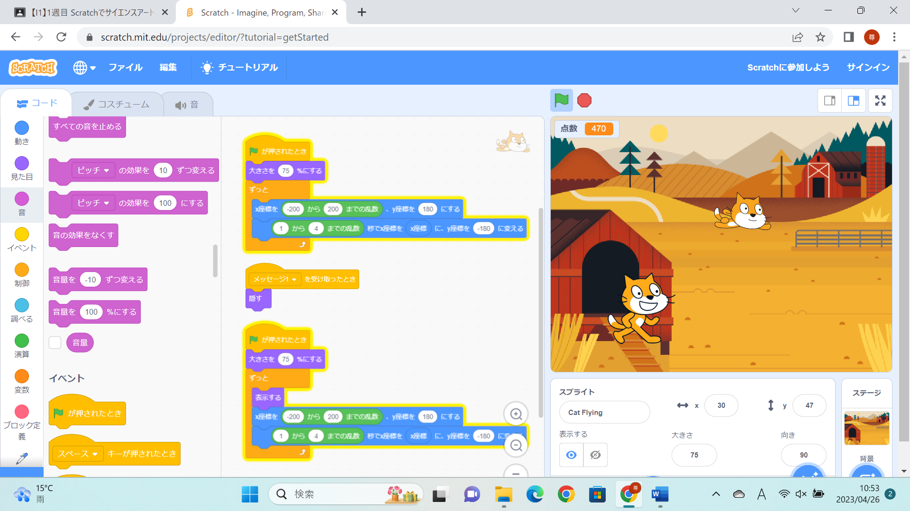

1週目のレポート ： 公大高専１年実習I-1
4a班11番 sasaki
第1週目
1-1 サイエンスアート

1.内容
スクラッチを使って線を描くプログラムを学び、自分でキャラクターを動かすためのプログラムを組み立てた。 また、そのプログラム画面をスクリーンショットを取り、ファイルに名前を付けて保存した。
2.感想
過去に一人でやってみたことがあり、その時よりも高度なプログラムを組み立てることができてよかったです。 1つのプログラムでは単純な動きしかできなかったけれど色々なプログラムを組み立てることで自分がやりたい動きを作り出すことができて面白かったです。 自分が想像してる動きと異なった動きをしたときにどのプログラムが原因か考えることが少し大変でした。 思い通りのプログラムでも不必要なプログラムが多くあったので改善する必要があると思いました。
1-2 ゲーム

1.内容
スクラッチを利用しプログラミングで猫を動かし,落ちてくるアイテムを回収するゲームを作成した。 また、その画面をスクリーンショットをしてファイルに名前を付けて保存した。
2.感想
ゲームを作るのは初めてだったので自作のゲームに少し愛着が湧きました。 動きといっても面白くするのはどういうプログラムが最適か考えるのが大切だと思いました。
1-3 ホームページ作成
私のホームページ
1.内容
githubにサインインして個人のアカウントを作成し、githubを利用して自分についての自己紹介を書いたホームページを立ち上げた。 レポートに自分のホームページのリンクを貼り付けた。
2.感想
HTMLのコードが既に打たれていましたが、自分で作るときはコードも全て理解し、実用可能な範囲まで作成するのはとても難しいということがわかって少し不安になった。 しかし、プログラミングができるようになるためにこの学校に入ったので、楽しかったです。